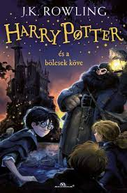
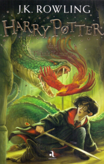
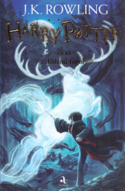
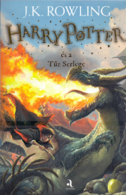
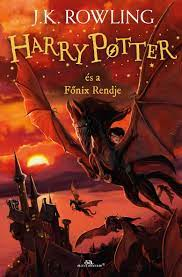
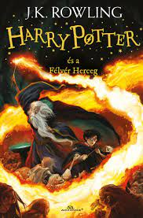
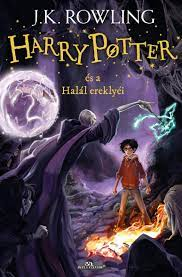
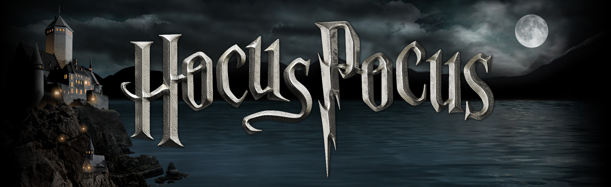

J. K. Rowling siker-könyvsorozata a Harry Potter a fantasy műfaj egyik legnépszerűbb alkotása. Nem egy gyerek nőhetett fel egyszerre a kis túlélővel és fejthette meg a varázslóvilág titkait. A filmadaptációk is olyan jó sikerültek, hogy sokan nem is olvasták a könyveket, mondván: Azok hosszúak. Nincs annyi időm. Mégis azt javaslom merülj el a könyvekben is.
J. K. Rowling
Pár szó az íróról
Joanne Kathleen Rowling Yate-ben született 1956. július 31.-én. Kiskorában apja olvasott neki sokat, már akkor nagyon szerette a fatasztikus mesék. Interjúk során kiderült, hogy nagy hatással volt az britt írónőre a Narnia krónikái C. S. Lewis-tól. Már gyerek korában is rajongott a történetekért. Kishugának rendszeresen olvasott meséket. Mitöbb iskolában a kendvenc elfoglaltsága is az volt, hogy történetekkel szórakoztatta barátait ebédszünetben. Az egyetemen franciát és klasszika-filológiát tanult.
1990-ben egy Manchesterből Londonba tartó vonatúton születtek meg, a ma már vilghírű varázsló fiú történetének alapjai. Mire az írónő leszált a vonatról, már több karatert és helyszínt is teljesen kitalált.
Az emberek nem tudják, de boszorkányok és varázslók élnek közöttük. Harry Potter tizenegy éves, amikor megtudja, hogy ő bizony varázslónak született, és felvételt nyert a Roxfort Boszorkány és Varázslóképző Szakiskolába. Itt viszon nem csak a vizsgákon kell megfelelnie, de egy életre-halálra szóló küzdelemnek is részese lesz.
A varázslóiskola
A Roxfort egy igen érdekes iskola. Négy háza van: Griffendél, Hollóhát, Hugrabug és Mardekár. Midegyikbe az adott tulajdonsággal rendelkező diákok kerülnek. A Griffendélbe a bátrak és vakmerőek, a Hollohátba meg a magas inteligenciájúak és kutató szelleműek kerülnek. A Hugrabugosoknál a türelem, szorgalom és hűség dominál. A Mardekáros diákok pedi leleményesek és törekvők.
A táblázatban a könyvek alap adatait tüntetjük fel (cím és borítókép). A felsorolás a történet sorrendjét követi.
Cím
Borító
Harry Potter és a bölcsek köve

Harry Potter és a Titkok Kamrája

Harry Potter és az Azkabani fogoly

Harry Potter és a Tűz Serlege

Harry Potter és a Főnix Rendje

Harry Potter és a Félvér Herceg

Harry Potter és a Halál Ereklyéi

Jó filmadaptáció
El kell ismernem Harry Potter története azon ritka esetek egyike, amikor egy könyv filmadaptációja is olyan jól sikerül mint az eredeti mű. Ennek ellenére is azt modnom a fiatal varázslóról szóló filmek szerelmeseinek, hogy olvassák el a könyveket. Több szálat is kihagytak a filmekből, ami megmosolyogtatja vagy elgondolkontatja az olvasót.

Fejlődéstörténet
Az ifjú tanonc fejlődés tröténete rengeteg fontos témakört érint, mégis mindegyiket a maga idejében. A könyveken keresztül követhetjük Harry felnőtté válását. A történet folyamán a kezdetben elsődlegesen humoros és bájos vonások háttérbe kerülenk. Az egyre éretteb főhősünk, barátaival megtapasztalják a rasszizmust, szembekerülnek a predesztináció (eleve vagy előre elrendetség) és a halál kérédesivel. A történet rekölcsi üzenete, mégis minden helyzetben ugyan az: A szeretet megvéd és a jó irányba terel. Habár örök évényű, ezt az állítást árnyalja például Dumbledore professzor és Perselus Piton esete. Mindekettejük megértéséhez egy érettebb gondolkodás szükséges. Ebben remekel a Harry potter. A könyvek olvasásával együtt nőhetünk fel a főhőssel, és kerülhetőn szembe egyre nehezebb témákkal.
„Világunk átalakítására nincs szükség mágiára. Ami kell hozzá, az ott van mindnyájunkban.”